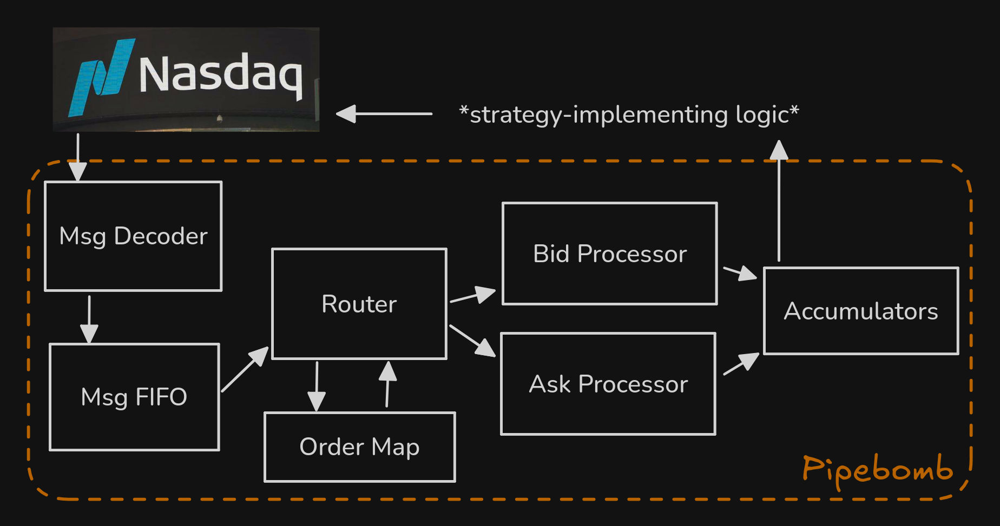

This page explains the design of a pipelined order book called Pipebomb. Pipebomb Is a Pipelined and Eventually Balanced Order-Managing Book. In short, the hardware module takes in a stream from Nasdaq’s ITCH protocol and maintains calculations of metrics that drive strategic decisions. These metrics are accumulated in discrete and configurable circuits that read from caches for internal order book data structures (see Caching). The following sections break down Pipebomb into it’s data structures, algorithms, and pipeline stages. Find more information in the Discord or the source.
I/O
Let’s talk concretely about the input and output of this entire circuit, first by comparing Pipebomb to a normal CPU.
The data models are entirely different. Where traditional von Neumann architectures are fetching instructions from memory, loading them into L1i, and jumping a PC throughout a process, Pipebomb’s instructions are a bit more transitive. The ITCH stream comes in on a wire, and we read this wire to perform the operation (something like ADD_ORDER, EXEC_ORDER, DEL_ORDER). Once the ITCH message’s operation has been performed, it’s useless.
Another key difference is that Pipebomb is not Turing-complete. Traditional processors provide an effectively Turing-complete ISA which can perform any computation given time and resources. Write your program, compile it for your architecture, and run it. The whole appeal of using the FPGA platform is that we aren’t bound by this. For a quick example, imagine compiling some pattern-matching logic with 100 patterns to assembly. Ignoring the jump table optimization for a minute, your assembly will have hundreds of instructions comparing the value to each branch and jumping to the relevant label if it is. This will take many clock cycles. In contrast, on an FPGA we could just synthesize this logic with a multiplexer. It’s a function of combinational logic and will take a fraction of a single clock cycle.
ITCH messages as CPU instructions
So without some traditional ISA, what do we have? We have a stream of ITCH messages that we interpret as CPU instructions. They look something like this:
typedef enum logic [3:0] {
ITCH_ADD = 4'h1,
ITCH_OEXEC = 4'h2,
ITCH_PEXEC = 4'h3,
ITCH_CANCEL = 4'h4,
ITCH_DELETE = 4'h5,
ITCH_REPLACE = 4'h6,
} opcode_t;
typedef enum logic {
SIDE_BID = 1'b0,
SIDE_ASK = 1'b1
} side_t;
typedef struct packed {
opcode_t opcode;
logic valid;
logic [63:0] timestamp;
side_t side;
logic [ORDER_ID_BITS-1:0] order_id;
logic [PRICE_BITS-1:0] price;
logic [QUANTITY_BITS-1:0] quantity;
logic [ORDER_ID_BITS-1:0] new_order_id; // replace only
} inst_t;Instead of opcodes like add or lw, we have those from the ITCH protocol description.
Accumulators
Accumulators are the outputs. The whole point of writing an order book here is to quickly find market indicators that drive strategic decisions. These indiators are things like moving average, volatility, and mid-price.
State
Between this input stream and these accumulators is a lot of state:
- The depth of each price in the market. The market is split up into two arrays mapping price levels to quantities, one for bids and one for asks.
- An index of previous orders. The
ITCH_ADDinstruction supplies an orderID, a price, and a quantity. TheITCH_DELETEinstruction only supplies and orderID. We need to save the price and quantity associated with each orderID so when the order’s state changes at Nasdaq we can update our underlying data structures accordingly despite not immediately knowing what price level the order was. - Caches. Some architectural decisions mean that some order book traversal algorithms have poor time complexities. We fix this by caching things relevant to them.
- Messages. We queue messages in a FIFO to ensure we don’t double count nor lose any instructions.
Pipelining

Here’s the order book broken down into its modules and their dependencies. For a quick summary, orders come in, are decoded into into inst_t, and placed in a queue. Every cycle, we dequeue an instruction (perhaps multiple later on). If this instruction is not an ITCH_ADD, that implies the order it’s updating already exists, so we need to fetch information about it from the Order Map. With all info in hand, we split off into the Bid side and the Ask side. Now we’re parallelized on two axes, performing order book update operations on disjoint data structures. Then we have the accumulators, which maintain the inputs to strategic decisions as described above.
Message decoder and FIFO
As mentioned, the “instructions” in our architecture are not compiled binaries that carry out some process loaded into memory. They are a stream of ITCH messages. This stream is raw bytes on a wire, we’ll need to parse them into a sort of instruction.
The implementation of this parser is complex. Punt Engine’s design is not yet defined. Regardless, messages will be parsed into an inst_t and enqueued into the Message FIFO. From there the rest of the pipeline will dequeue instructions and execute them.
With this setup, we won’t execute the same instruction twice as it’s dequeued and deleted after is passed through the pipeline.
There are a few techniques to not miss instructions, which involves overflowing of the FIFO:
- send backpressure signal to exchange
- lower in the network stack, drop irrelevant ethernet frames or other structures
- have multiple entire pipelines processing orders. We are working to find parallelism on this axis.
Router and order map
At this point, we have a single inst_t and we’re ready to begin updating our order book. Recall what inst_t looks like:
typedef struct packed {
opcode_t opcode;
logic valid;
logic [63:0] timestamp;
side_t side;
logic [ORDER_ID_BITS-1:0] order_id;
logic [PRICE_BITS-1:0] price;
logic [QUANTITY_BITS-1:0] quantity;
logic [ORDER_ID_BITS-1:0] new_order_id; // replace only
} inst_t;Know that no instruction uses each of these signals itself. The structure is essentially a union of all the data that any one instruction needs. We wrap them into inst_t and then split the bus carrying the instruction to get the data we actually want.
Here’s a quick breakdown of inst_t:
opcodeis the type of ITCH message (ADD/EXEC/DELETE).validmarks whether the message contains meaningful data and facilitates bubbling and error handling.timestampis the timestamp of the request. Perhaps it can be useful for synchronization if we parallelize the design later.sideis either bid or ask. We’ll route the instruction to the relevant side processor based on this.priceis a price. Note that we can perform some type of bucketing with the price to decrease the perceived book sparsity. If it doesn’t impact our strategy too much, dividingpriceby 0.08 will use less energy, less surface area, and increase book density. Many of the design decisions in later stages are particularly efficient for dense books. Dense books have relatively small gaps between populated price levels. It’s a bit beyond the scope of this post, but previous designs considered using a self-balancing tree backing structure to be more efficient for sparse books1. That’s where the “Eventually Balanced” in the Pipebomb acronym comes from.quantityis the additional depth to be added at the relevant price level by this order. In the case of CANCEL or DELETE instructions, this quantity will be negative and pulled from the Order Map, see below.new_order_idis only for REPLACE instructions.
The goal of this part of the order book is to take instructions and update the order books state based on them. As hinted at earlier, the effect of DELTE and CANCEL operations is not explicit from the ITCH messages they’re parsed from. You can imagine that deleting an order involves removing the depth that it added to its price level in the order book. We’d do this by decrementing the depth there by the amount that was initially added. The problem is that the DELETE instruction only specifies the order_id to be deleted, it doesn’t include the price or quantity to be decremented. For that reason we have an Order Map, a mapping of order_ids to prices and quantitys. This pipeline stage fetches data from this map when necessary and prepares it for the next stage, which actually acts out the message’s effect on the book.
Bid and ask processors
The bid and the ask processor are degeneralizations of the side processor, another stage in this pipeline. Each processor is a manager for two underlying data structures.
The first is a circular buffer. It’s an array with a predefinized length, let’s call that . Ignoring bucketing for a second, imagine we’re trading BTC. Then buffer[$100,000.01] = the total volume across all orders at the same price level as $100,000.01 in this side of the book. If we’re counting from $0.00 though, this array is going to be huge. Say we offset it a bit, starting at $90,000.00, so buffer[$100,000.01 - $90,000.00] = the total volume across all orders at the same price level as $100,000.01. With this we save space, but certainly if BTC increases to $1m, we can’t accomodate. So the final design involves taking the price index mod and getting that index of the buffer. Here buffer[$100,000.01 mod 10.24] is the total volume. Obviously, if we index $100,010.25, we will get the same quantity as we did for $100,000.01. Making this space optimization assumes that the strategy that we’re working with only really cares about the inside of the book. Good order book implementations are driven by good strategies, finding a strategy that is profitable for a small will improve this part of the pipeline.
The second is a -best price levels cache. Recall the tradeoff between the circular buffer design and the self-balancing tree design mentioned above. The circular buffer has random access time, but is very space inefficient for sparse books. With sparse books our backing array will be full of zeroes, with only a small percentage of indices actually populated with orders. The self-balancing tree avoids this by only managing nodes for price levels that are populated, with random access time. Another skip-list like optimization on top of that makes certain accumulator calculations faster. Each side of the book maintains the best bids or asks for use in calculating accumulators.
Caching common indicator parameters
Let’s talk more on this -best cache. A problem with the circular buffer design is that updating the best bids or asks takes linear time. You need to move from the middle of the book towards the poles until you find populated price levels. Doing this on every clock cycle would make this the slowest stage in the pipeline, decreasing the global clock speed. Instead, we can just cache the levels.
Let’s look at some Verilog:
module price_cache #(
parameter CACHE_LEVELS = 5 // k
)(
// ... interface signals ...
// Input from side processor
input logic [PRICE_BITS-1:0] update_price,
input logic [QUANTITY_BITS-1:0] update_quantity,
input logic update_valid,
input logic is_bid_side
// Output to metrics calculator
output price_level_t cached_levels[CACHE_LEVELS],
output logic cache_valid
);Each side processor has a price_cache between it and the metrics calculator. This cache is sorted.
Also note that the side processor can update the best price in time like this:
PROCESS_ADD: begin
price_levels[process_idx].total_quantity <= price_levels[process_idx].total_quantity + process_quantity;
price_levels[process_idx].valid <= 1'b1;
if (is_better_than_current_best(process_idx)) begin
update_best_needed <= 1'b1;
end
endBut it’s for where we have to traverse down the price levels.
Now within the cache, there’s two main operations:
- Single-level updating. If the
update_pricefrom the side processor is already in the cache, we just update it byupdate_quantity. Ifupdate_quantityis 0 though, we need to remove it. We’d shift all the entries in the cache up in the buffer, then clear the last entry. If theupdate_priceis not in the cache, we add this new level in, shifting all current cache entries down. - Cache rebalancing. Recall how the side processors are backed by circular buffers. When the best price crosses some multiple of , the indices of the buffer now have a new meaning, and the indices in the cache are useless. We’d need to rebuild the entire cache.
Accumulators
Accumulators are the thing that all other levels have worked to produce. We’ve defined them above, let’s just see what they look like.
You can calculate the mid-price based on the bid and ask caches:
always_comb begin
if (bid_cached_levels[0].valid && ask_cached_levels[0].valid) begin
mid_price = (bid_cached_levels[0].price + ask_cached_levels[0].price) >> 1;
mid_price_valid = 1'b1;
end else begin
mid_price = last_mid_price;
mid_price_valid = 1'b0;
end
endYou can calculate exponential moving averages similarly:
always_ff @(posedge clk) begin
if (update_metrics && mid_price_valid) begin
// EMA = α * price + (1-α) * previous_EMA
ema_short_reg <= fixed_multiply(mid_price, ALPHA_SHORT) + fixed_multiply(ema_short_reg, ONE - ALPHA_SHORT);
ema_medium_reg <= fixed_multiply(mid_price, ALPHA_MEDIUM) + fixed_multiply(ema_medium_reg, ONE - ALPHA_MEDIUM);
ema_long_reg <= fixed_multiply(mid_price, ALPHA_LONG) + fixed_multiply(ema_long_reg, ONE - ALPHA_LONG);
end
endYou can imagine how other accumulators use the caches or even communicate directly with the side processors to grab inputs and maintain some market indicator.
All together
We’ve defined the I/O of this circuit, its pipeline stages, and the data structures and algorithms that make everything possible. Along with all of these pipeline stage modules, we’d have a top module that wraps all of them and provides an interface to the order book. We’d connect this to an ITCH parserthat itself handles the OSI stack and stream connection. We’d likely output to some DMA controller that would use AMD IP and Madlib to communicate across PCIe to a host OS.
Look again at the order book broken down into its modules. Do you understand it? If not, send a message in Discord or come to office hours.
Footnotes
-
This prior design was inspired by Exploring the Potential of Reconfigurable Platforms for Order Book Update. ↩